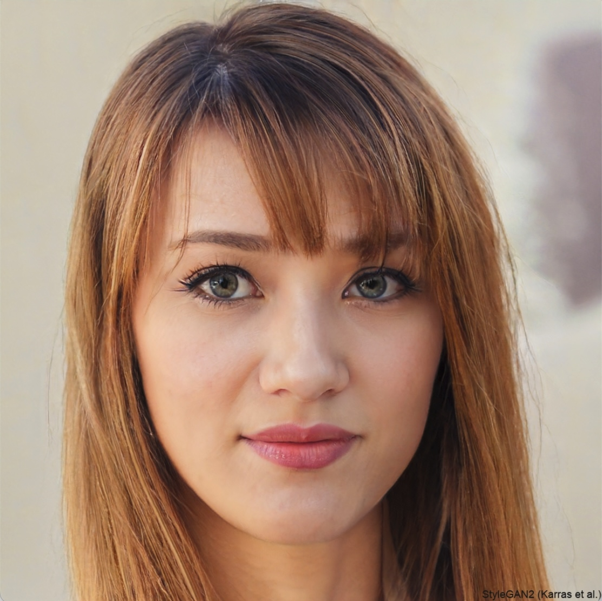

Artificial Intelligence
ACTL3143 & ACTL5111 Deep Learning for Actuaries
Shakey the Robot (~1966 – 1972)

Route-finding I
At its core, a pathfinding method searches a graph by starting at one vertex and exploring adjacent nodes until the destination node is reached, generally with the intent of finding the cheapest route. Although graph searching methods such as a breadth-first search would find a route if given enough time, other methods, which “explore” the graph, would tend to reach the destination sooner. An analogy would be a person walking across a room; rather than examining every possible route in advance, the person would generally walk in the direction of the destination and only deviate from the path to avoid an obstruction, and make deviations as minor as possible. (Source: Wikipedia)

Route-finding II

Tunes of the Kingdom: Evolving Physics and Sounds for ‘The Legend of Zelda: Tears of the Kingdom’, GDC 2024
Evaluating a chess game II
Just add up the pieces for each player.

| 6 × 1 = 6 | |
| 1 × 3 = 3 | |
| 1 × 3 = 3 | |
| 2 × 5 = 10 | |
| 0 × 9 = 0 | |
| 1 × 0 = 0 | |
| Black | 22 |
Overall: 21 − 22 = −1.
The minimax algorithm


Chess
Deep Blue (1997)


Machine Learning
Tried making a computer smart, too hard!
Make a computer that can learn to be smart.

The Venn diagram of Artificial Intelligence, Machine Learning, and Deep Learning.
Definition
“[Machine Learning is the] field of study that gives computers the ability to learn without being explicitly programmed” Arthur Samuel (1959)

Image Classification I
What is this? 
Options:
- punching bag
- goblet
- red wine
- hourglass
- balloon
Note
Hover over the options to see AI’s prediction (i.e. the probability of the photo being in that category).
Image Classification II
What is this?

Options:
- sea urchin
- porcupine
- echidna
- platypus
- quill
Image Classification III
What is this?

Options:
- dingo
- malinois
- German shepherd
- muzzle
- kelpie
How were the images labelled?

“Two years later, the first version of ImageNet was released with 12 million images structured and labeled in line with the WordNet ontology. If one person had annotated one image/minute and did nothing else in those two years (including sleeping or eating), it would have taken 22 years and 10 months.
To do this in under two years, Li turned to Amazon Mechanical Turk, a crowdsourcing platform where anyone can hire people from around the globe to perform tasks cost-effectively.”
Needed a graphics card
A graphics processing unit (GPU)

“4.2. Training on multiple GPUs A single GTX 580 GPU has only 3GB of memory, which limits the maximum size of the networks that can be trained on it. It turns out that 1.2 million training examples are enough to train networks which are too big to fit on one GPU. Therefore we spread the net across two GPUs.”
Lee Sedol plays AlphaGo (2016)
Deep Blue was a win for AI, AlphaGo a win for ML.

Lee Sedol playing AlphaGo AI
I highly recommend this documentary about the event.
Generative Adversarial Networks (2014)
https://thispersondoesnotexist.com/


Diffusion models


Dall-E 2 (2022) vs Dall-E 3 (2023)
Same prompt: “A beautiful calm photorealistic view of an waterside metropolis that has been neglected for hundreds of years and is overgrown with nature”


Students get Copilot for free

A student post from last year:
I strongly recommend taking a photo holding up your Academic Statement to your phone’s front facing camera when getting verified for the student account on GitHub. No other method of taking/uploading photo proofs worked for me. Furthermore, I had to make sure the name on the statement matched my profile exactly and also had to put in a bio.
Good luck with this potentially annoying process!
Homework It’s a slow process, so get this going early.
A taxonomy of problems

New ones:
- Reinforcement learning
- Semi-supervised learning
- Active learning
Supervised learning: mathematically

A recipe for supervised learning.
Self-supervised learning
Data which ‘labels itself’. Example: language model.


Example: image inpainting


Other examples: image super-resolution, denoising images.
Example: Deoldify images #2

A deoldified Golden Gate Bridge under construction.
An artificial neuron

A neuron in a neural network with a ReLU activation.
One neuron
\begin{aligned} z~=~&x_1 \times w_1 + \\ &x_2 \times w_2 + \\ &x_3 \times w_3 . \end{aligned}
a = \begin{cases} z & \text{if } z > 0 \\ 0 & \text{if } z \leq 0 \end{cases}
Here, x_1, x_2, x_3 is just some fixed data.
The weights w_1, w_2, w_3 should be ‘learned’.
One neuron with bias


{kind=link}
{kind=link}
{kind=link}
{kind=link}
A basic neural network

A basic fully-connected/dense network.
Try different activation functions

Feature engineering


Doesn’t mean deep learning is always the best option!
Quiz
In this ANN, how many of the following are there:
- features,
- targets,
- weights,
- biases, and
- parameters?
What is the depth?

Glossary
- activations, activation function
- artificial neural network
- biases (in neurons)
- classification problem
- deep network, network depth
- dense or fully-connected layer
- feed-forward neural network
- labelled/unlabelled data
- machine learning
- neural network architecture
- perceptron
- ReLU
- representation learning
- sigmoid activation function
- targets
- weights (in a neuron)